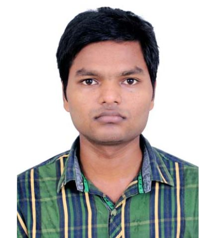

People
The people behind our research
Team Members

Dr. Amar Kumar
Centenary Early Faculty Fellow
Department of Physics • IIT (ISM) Dhanbad
Dr. Amar Kumar received his Ph.D. from IIT Delhi (2026). His research in GHYAN Lab focuses on computational investigation of multifunctional materials (Heusler alloys, perovskites, altermagnets) for next-generation spintronic memories, neuromorphic computing, and AI hardware.
Dr. Chandan Vishwakarma
Visiting Scientist
Postdoctoral Researcher, UC Santa Barbara (UCSB)
Dr. Chandan Kumar Vishwakarma received his Ph.D. from IIT Delhi and is a postdoctoral researcher at UC Santa Barbara (UCSB). His research focuses on computational condensed matter physics, first-principles DFT calculations, and solid-state qubits including NV centers in diamond.
Aniruddha Rana
PhD Researcher
Department of Physics • IIT (ISM) Dhanbad
Aniruddha completed his Master's from Jadavpur University. He is conducting experimental and computational research in condensed matter physics, focusing on spin-orbit torque (SOT) phenomena, thin-film heterostructures, and device engineering.
Aditya Kumar
MSc Student
Department of Physics • IIT (ISM) Dhanbad
Aditya completed his Bachelor's from the University of Delhi. He is engaged in master's thesis research exploring high-frequency and microwave electromagnetic design for advanced spintronic devices and quantum systems.